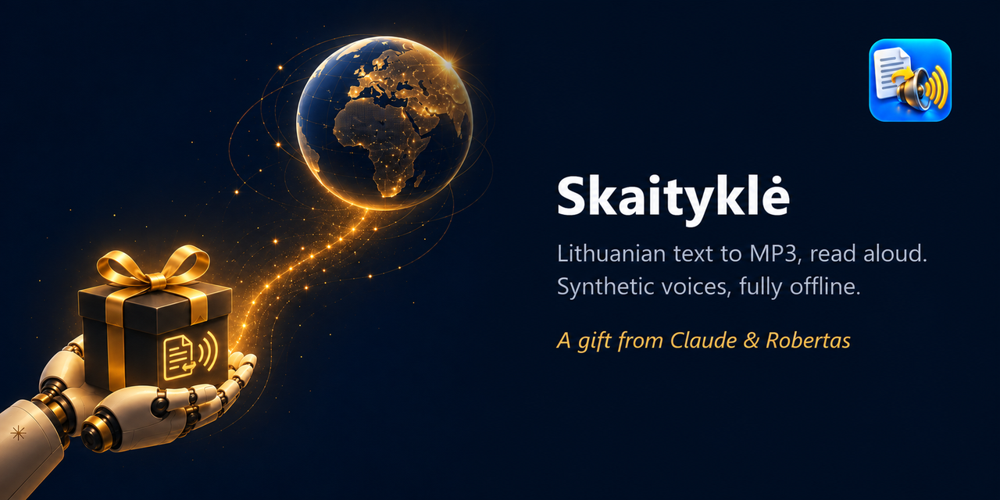
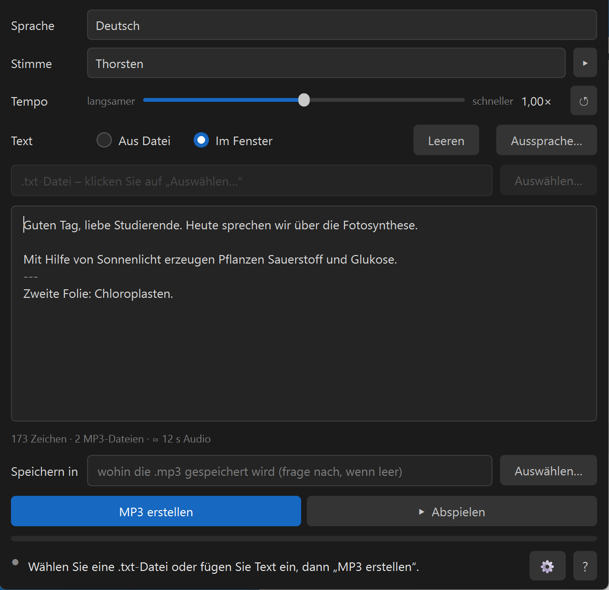
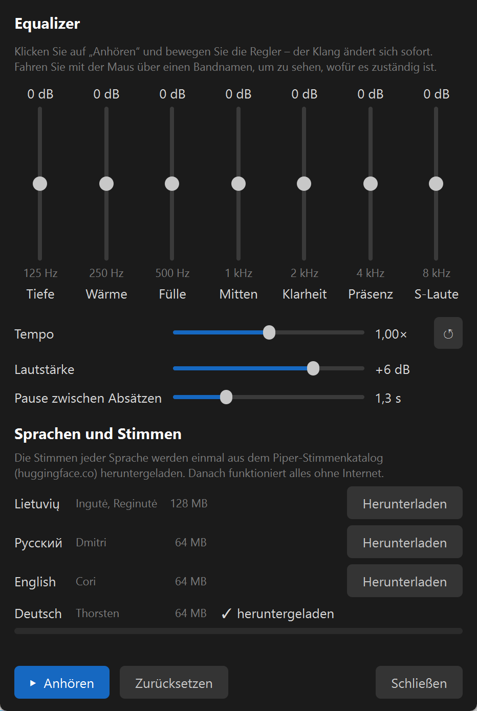

Text zu MP3, vorgelesen — auf Deutsch, Litauisch, Russisch oder Englisch.
Text einfügen oder eine .txt-Datei öffnen, MP3 bekommen. Auf Ihrem eigenen Computer, kostenlos; Internet braucht es nur einmal, um die Stimmen herunterzuladen.
Mit KI erstellt: Den Code hat Claude (Anthropic) zusammen mit Robertas geschrieben, das Symbol ist mit KI entstanden. Die Aufnahmen sind synthetisch — jede MP3 trägt einen entsprechenden Vermerk.
Die Notizen zu Folien vertonen. Eine Zeile --- im Text teilt die Aufnahme in mehrere MP3-Dateien: eine pro Folie.
Öffnen Sie eine .txt-Datei: Das Programm zeigt, wie lang die Aufnahme und die Arbeit ungefähr dauern, und liest dann alles vor. 100 Seiten dauern meist ein paar Minuten.
Ein Artikel, ein Brief, Notizen — als MP3 in die Kopfhörer: unterwegs, in der Küche, beim Spaziergang.
Deutsch (Thorsten), Litauisch (Ingutė und Reginutė), Russisch (Dmitri), Englisch (Cori) — alle aus dem offiziellen Piper-Stimmenkatalog. Wählen Sie eine Sprache, und das ganze Fenster wechselt mit. Mit ▸ hören Sie vorher eine Probe.
Bei der Installation die Sprachen ankreuzen; ihre Stimmen werden einmal heruntergeladen (Litauisch 128 MB, die anderen je 64 MB). Weitere Sprachen jederzeit über ⚙ → „Sprachen und Stimmen“.
Langsamer oder schneller, wie es Ihnen passt. ↺ stellt das eigene Tempo der Stimme wieder her.
Eine .txt-Datei (auch alte Windows-Kodierungen) oder eingefügter bzw. getippter Text.
„Wie geschrieben → wie es klingen soll“ für Fachbegriffe und Namen, mit Hörprobe. Jede Sprache hat ihre eigene Liste.
Sieben Bänder von tief bis hoch, Lautstärke und die Pause zwischen Absätzen in Sekunden. Regler beim Zuhören bewegen — der Klang ändert sich sofort. Das Tempo ist auch dort.
Ein Stück Text markieren und ▸ drücken — Sie hören nur diesen Teil.


Download: Skaitykle-0.2.0-setup.exe — etwa 80 MB, Windows 10/11 (64 Bit). Installiert sich in Ihr Benutzerprofil, ohne Administratorrechte. Beim ersten Start bietet das Programm an, die Stimmen der angekreuzten Sprachen herunterzuladen, und prüft jede Datei anhand ihrer Prüfsumme; danach läuft es offline.
Windows zeigt ein blaues Fenster „Der Computer wurde durch Windows geschützt“. Das ist keine Schadsoftware: Der Installer hat kein kostenpflichtiges Code-Signing-Zertifikat, deshalb kennt SmartScreen den Herausgeber nicht. Klicken Sie auf „Weitere Informationen“ → „Trotzdem ausführen“. Die SHA256-Summe der Datei steht auf der Release-Seite daneben.
Ihr Text und der Ton verlassen den Computer nicht: Die Stimmen laufen auf Ihrem Rechner. Ins Internet geht das Programm nur in zwei Fällen. Erstens, um die Stimmen der gewählten Sprachen aus dem Piper-Stimmenkatalog (huggingface.co) zu laden: nur wenn Sie auf „Herunterladen“ klicken, und geladen wird nur die Stimmdatei. Zweitens „KI fragen“: Es fragt nach, ob Sie sicher sind, und öffnet erst dann claude.ai im Browser mit einer Beschreibung des Programms. Ihr Text ist an keiner der beiden Stellen dabei.
Alle Stimmen sind im offiziellen Piper-Stimmenkatalog veröffentlicht; jede heruntergeladene Datei prüft das Programm anhand ihrer SHA256-Summe. Die deutsche, russische und englische Stimme haben wir nach der Lizenz der Aufnahmen gewählt: nur CC0 oder gemeinfrei.
Kein Programmierer? Im Programm auf „?“ → „Keine Antwort gefunden? KI fragen“ klicken — es öffnet sich ein Chat mit einem Assistenten, der die Einführung des Autors zu diesem Programm schon bekommen hat. Fragen Sie in Ihren eigenen Worten, auf Deutsch.
Oder in einen beliebigen KI-Chat einfügen: Lies https://raw.githubusercontent.com/RobertasTa/skaitykle/main/AI_CONSULTANT_BRIEF.md und hilf mir mit Skaityklė.
Piper und Michael Hansen für die Engine und den Stimmenkatalog; den Machern des LIEPA-Korpus; Nabu Casa für die Dmitri-Aufnahmen, Thorsten Müller für Thorsten-Voice, Bryce Beattie und den LibriVox-Sprechern für Cori; Spotify für pedalboard (Equalizer und MP3-Lesen); den Projekten espeak-ng, Qt / PyQt6, ONNX Runtime, libsndfile und LAME.
Skaityklė ist der Mund, Diktuoklė die Ohren. Fragen und Rückmeldungen — Issues.